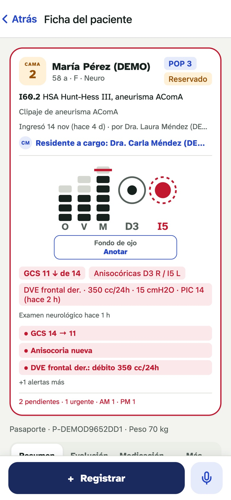

Dictado por voz
Hablas y la nota queda escrita y ordenada.
El censo, el pase de guardia y los pendientes del servicio, en el teléfono. Todo el equipo ve lo mismo, al día.
Te la muestro funcionando, con pacientes de prueba.


Un solo lugar. Todo el equipo. Toda la guardia.
Hoy la guardia se entrega de memoria, con papelitos y mensajes que se pierden entre cientos de chats. Lo importante de cada paciente queda repartido en el teléfono de cada médico.
Papelitos, mensajes sueltos y el pase de memoria. RelevoMed lo ordena para que todo el equipo vea lo mismo.
El Glasgow de cada cama en una sola gráfica. Si alguien empeora, se pone en rojo y aparece en «Requieren atención». A las 3 a. m. sabes a quién ver primero.
Glasgow por partes y pupilas a escala, con la tendencia. Un cambio de 14 a 11 o una anisocoria nueva se ven sin leer una línea.
Gravedad, resumen y «si pasa… entonces…». El estado clínico y el pase usan la misma escala, y si no coinciden la app avisa.

Lees el pase de cada paciente y confirmas con «Recibí la guardia».
Lo cargas en el teléfono con la cama y el diagnóstico, y aparece en la lista de todos.
El Glasgow de la cama 2 baja de 14 a 11. La paciente se pone en rojo y sube a «Requieren atención».
Hablas y la nota queda escrita y ordenada en la ficha.
Revisas el pase de todos, lo corriges si hace falta y lo envías al equipo que entra.
Ejemplo con una paciente de prueba.
Lo que un servicio necesita de verdad, sin pantallas de más.
Hablas y la nota queda escrita y ordenada.
Sigues trabajando sin señal; se comparte con el equipo al volver.
Con quién lo tiene y si es urgente. Se marcan hechos deslizando.
Evolución, órdenes, epicrisis e historia en PDF o Word.
Quién está de guardia hoy y el rol del mes.
Otro servicio pide opinión y la respuesta queda en la ficha.
La seguridad no es un extra: está en cada pantalla.
Contraseña más un código de 6 dígitos, y la app se abre con tu huella.
Un servicio no ve los pacientes de otro, salvo una interconsulta abierta.
No vendemos datos ni los usamos para anuncios.
Registra lo que el equipo indica. No calcula dosis ni sugiere tratamientos.
Sin equipos nuevos: con los teléfonos del equipo basta.
Por WhatsApp, con tu servicio y tu hospital.
Funcionando, con pacientes de prueba, y vemos qué necesita tu servicio.
Cada médico entra con su cuenta y el censo queda listo para la guardia.
No para trabajar. Lo que anotas se guarda en el teléfono y se comparte con el equipo cuando vuelve la señal.
En Android, como app, y en cualquier teléfono o computadora desde el navegador, también en iPhone.
Nació en neurocirugía, pero el censo, el pase de guardia y los pendientes sirven para cualquier servicio. Escríbeme y vemos qué necesita el tuyo.
Solo el personal de tu servicio con su cuenta. Otro servicio solo ve a un paciente si hay una interconsulta abierta.
No. RelevoMed registra lo que el médico indica; las decisiones clínicas son siempre del equipo.
Escríbeme y te la muestro funcionando con pacientes de prueba.
El contacto por WhatsApp estará disponible muy pronto.